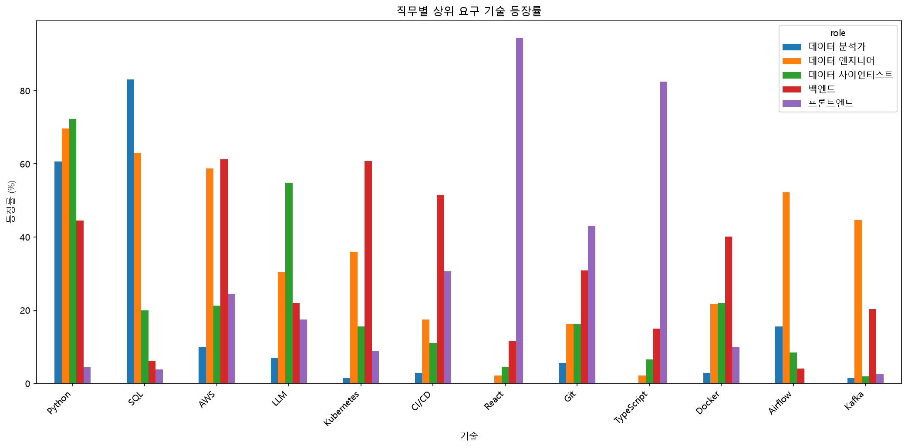
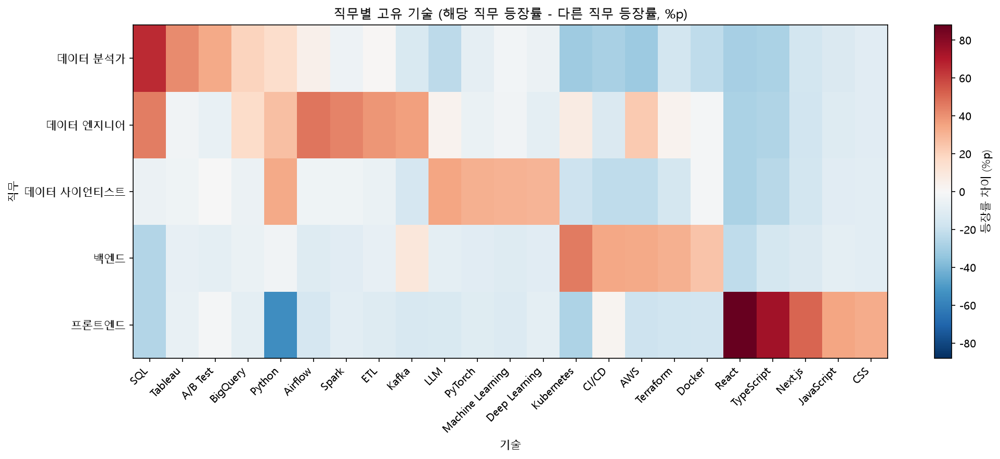
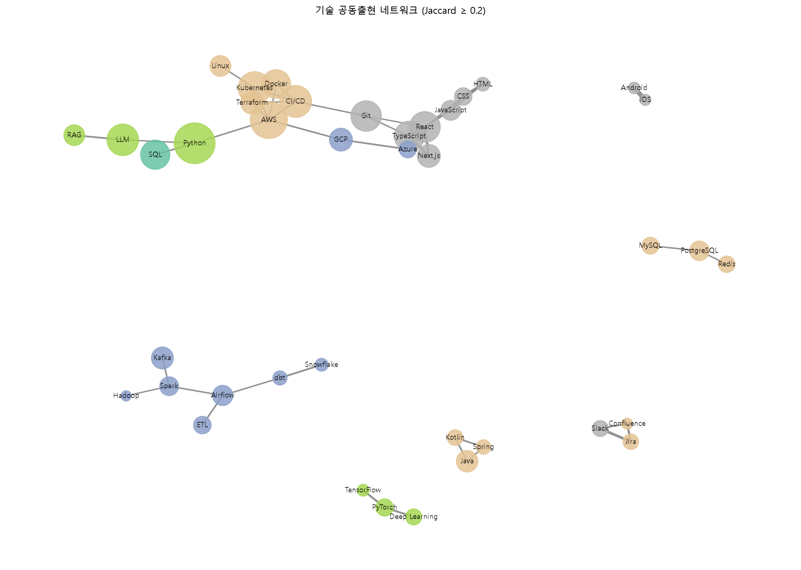

1직무마다 1위 기술이 달랐습니다
직무별 공고 중 그 기술이 등장한 비율입니다. 직무별 공고 수가 71~227건으로 달라서 건수가 아니라 비율로 비교했습니다.
| 직무 | 1위 | 2위 | 3위 |
|---|---|---|---|
| 데이터 분석가 | SQL 83% | Python 61% | Tableau 42% |
| 데이터 엔지니어 | Python 70% | SQL 63% | AWS 59% |
| 데이터 사이언티스트 | Python 72% | LLM 55% | Machine Learning 34% |
| 백엔드 | AWS 61% | Kubernetes 61% | CI/CD 52% |
| 프론트엔드 | React 94% | TypeScript 82% | Next.js 54% |

데이터 분석가 71건에서 SQL(59건)이 Python(43건)보다 많았고, 같은 공고 안에서 비교해도 SQL만 요구한 공고가 20건, Python만 요구한 공고가 4건이었습니다(McNemar 검정 p = 0.002).
2Python은 어디에나 있었고, 직무를 구별하는 기술은 따로 있었습니다
처음에는 TF-IDF로 직무를 구별하는 기술을 찾았습니다. 그런데 비교 단위가 직무 5개뿐이라 결과가 등장률 순위를 그대로 따라갔고, 데이터 엔지니어의 1위가 어디에나 있는 Python으로 나왔습니다.
그래서 해당 직무의 등장률에서 다른 직무 공고의 등장률을 뺀 값(%p)을 직접 계산했습니다. 데이터 엔지니어에서 Python은 7위(+27%p)로 내려갔고, 직무 고유 기술이 드러났습니다.
| 직무 | 1위 | 2위 | 3위 |
|---|---|---|---|
| 데이터 분석가 | SQL +66%p | Tableau +41%p | A/B Test +33%p |
| 데이터 엔지니어 | Airflow +47%p | SQL +45%p | Spark +44%p |
| 데이터 사이언티스트 | LLM +35%p | Python +33%p | PyTorch +31%p |
| 백엔드 | Kubernetes +46%p | CI/CD +34%p | AWS +33%p |
| 프론트엔드 | React +88%p | TypeScript +74%p | Next.js +51%p |

3LLM은 데이터 사이언티스트만의 기술이 아니었습니다
705건 중 196건(28%)에서 LLM이 등장했습니다. 등장률은 데이터 사이언티스트가 가장 높았지만, LLM이 나온 공고의 57%는 다른 직무의 공고였습니다.
괄호는 Wilson 95% 신뢰구간입니다. 데이터 사이언티스트 분류 규칙에 제목의 LLM이 들어 있어, 해당 직무 LLM 공고 85건 중 16건은 분류 단계에서 이미 반영된 공고입니다.
4기술은 조합으로 요구됩니다
같은 공고에 함께 나오는 정도를 공동출현 횟수와 Jaccard 유사도로 봤습니다. TypeScript + React는 154건, Jaccard 0.733으로 빈도와 결합도가 모두 높았고, Android + iOS는 25건뿐이지만 0.926으로 가장 강하게 묶였습니다. Python + AWS는 144건으로 많지만 0.316이라, 각각 여러 공고에 넓게 등장해서 겹친 것으로 보입니다.

직무 간 기술 구성의 유사도(코사인)는 데이터 엔지니어가 백엔드와 0.67, 데이터 분석가·데이터 사이언티스트와 각각 0.64로 가장 높았고, 데이터 분석가와 프론트엔드는 0.08로 가장 달랐습니다.
5숫자를 믿을 수 있게 만들기 위해 한 일
분석 결과를 처음 만든 뒤, 직무 분류와 기술 추출이 제대로 되었는지 표본으로 확인했습니다. 그 과정에서 결과를 바꾸는 문제를 여러 개 찾아 고치고, 전체 분석을 다시 실행했습니다.
가장 이상했던 숫자: 데이터 분석가 공고의 11%가 Vue.js를 요구하는 것으로 나왔습니다. 원문을 확인하니 Vue.js 별칭 뷰가 코드 리뷰, 웹뷰, 어트리뷰션 안의 글자까지 잡고 있었습니다.
Vue.js 오탐 수정
수정 전 매칭의 86%는 본문에 'vue'라는 글자가 없었습니다. 프론트엔드의 Vue.js는 57% → 14%가 됐습니다.
집계되지 않던 ETL
정규식 별칭이 소문자만 인식해서 대문자 ETL이 한 건도 잡히지 않았습니다. 데이터 엔지니어의 ETL 요구는 0% → 42%입니다.
직무 분류 누락
제외된 공고 중 분석 대상이었어야 하는 비율을 점검하고 프론트개발자, Platform Engineer 같은 표기를 규칙에 추가했습니다. 풀스택 86건은 따로 분리했습니다.
기술 추출 점검
등장이 많은 기술 20개와 일반 단어와 겹칠 수 있는 15개의 매칭 문장을 확인했고 오탐은 없었습니다. 숙련 요구로 보기 어려운 문맥 3건은 한계로 남겼습니다.
- 비율에는 신뢰구간을, 비교에는 McNemar·Kruskal-Wallis 검정을 붙였습니다. 경력별 기술 수 차이(6.4개 → 7.2개)는 p = 0.055로 5% 기준에서 유의하지 않았습니다.
- 같은 데이터로 분석을 두 번 실행해, 새 가상환경에서 다시 실행해도 결과 파일이 모두 같은 것을 확인했습니다.
- 이력에서 원본 데이터를 제거하고 수집 방식, 이용약관, robots.txt 확인 내용을 있는 그대로 문서에 기록했습니다.
6내 기술로 직접 확인해 보세요
내가 쓸 수 있는 기술을 고르면 직무별 매칭 점수와, 하나 더 배우면 점수가 가장 많이 오르는 기술을 보여 줍니다. 예측 모델이 아니라 이 분석의 등장률을 그대로 사용합니다.
7한계
- 원티드 단일 플랫폼의 공고이며 직무별 공고 수가 71~227건으로 달라, 표본이 작은 직무는 불확실성이 큽니다.
- 직무는 공고 제목으로 분류했습니다. 제목에 직무 키워드가 없는 공고는 일부 빠졌을 수 있고, 풀스택 공고는 분석에서 제외했습니다.
- 기술이 공고에 나왔는지만 센 결과라서 필수·우대 구분이나 요구 숙련도는 알 수 없습니다.
- 여러 검정을 했지만 다중 비교 보정은 하지 않았으므로 p값은 참고용입니다.